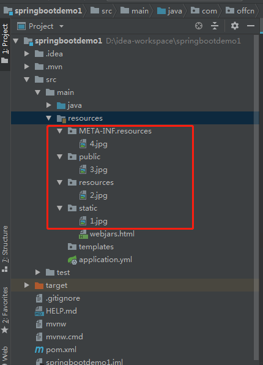
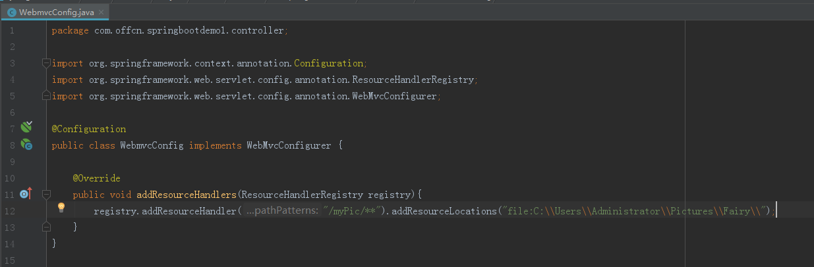

Spring Boot对静态资源映射提供了默认配置
Spring Boot默认将 /** 所有访问映射到一下目录
classpath:/static
classpath:/public
classpath:/resources
classpath:/META-INF/resources
在resources目录下新建 META-INF/resources、public、resources、static 四个目录，并分别放入 4.jpg 3.jpg 2.jpg 1.jpg图片

启动项目，在浏览器分别输入
http://localhost:8080/4.jpg
http://localhost:8080/3.jpg
http://localhost:8080/2.jpg
http://localhost:8080/1.jpg
例如：

将所有C:\\Users\\Administrator\\Pictures\\Fairy\\访问都映射到/myPic/**路径下
重启项目后，例如在C:\Users\Administrator\Pictures\Fairy中有一张1.jpg图片，
在浏览器输入http://localhost:8080/myPic/1.jpg即可访问
web.upload-path=C:\Users\Administrator\Pictures\Fairy
spring.mvc.static-path-pattern=/**
spring.resources.static-locations=classpath:/META-INF/resources/,classpath:/resources/,classpath:/static/,classpath:/public/,file:${web.upload-path}
web.upload-path：这个属于自定义的属性，指定了一个路径，注意要以/结尾；
spring.mvc.static-path-pattern=/**：表示所有的访问都经过静态资源路径；
spring.resources.static-locations：在这里配置静态资源路径，前面说了这里的配置是覆盖默认配置，所以需要将默认的也加上否则static、public等这些路径将不能被当作静态资源路径，在这个最末尾的file:${web.upload-path}之所有要加file:是因为指定的是一个具体的硬盘路径，其他的使用classpath指的是系统环境变量。
重启项目，例如在C:\Users\Administrator\Pictures\Fairy下有一张lion.jpg
在浏览器地址中输入http://localhost:8080/lion.jpg即可